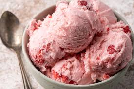

Ice Cream

Description
This Homemade Strawberry Ice Cream is creamy, dreamy, and made with fresh strawberries. It’s an old fashioned strawberry ice cream recipe that makes it the perfect spring or summer dessert.
Ingredients
- 30 ounces (1 quart plus a little extra) fresh strawberries, washed, hulled, and divided.
- 1 1/4 cups sugar, divided
- 4 tablespoons 80-proof liquor such as vodka or, preferably, Cointreau
- 2 cups half-and-half
- 1/2 cup corn syrup
- 1/2 teaspoon kosher salt, to taste
- Scant drops of lemon juice, if needed
Steps
- Quarter 6 ounces (about 1 cup) strawberries, then slice quarters crosswise into very thin pieces. In a mixing bowl, combine strawberries with 1/2 cup sugar and alcohol and let stand in refrigerator for at least 2 hours and up to 2 days.
- In a countertop blender, process remaining strawberries until very smooth, about 30 seconds. Strain through a fine-mesh strainer to filter out all seeds and fibers, then measure and reserve 1 1/2 cups purée. Extra purée, if there is any, can be put to another use.
- In a clean mixing bowl, whisk together 1 1/2 cups strawberry purée with half-and-half, corn syrup, and remaining 3/4 cup sugar until fully combined. Add salt to taste, and, if mixture is too sweet, a few drops of lemon juice.
- Chill in refrigerator until base is very cold, at least 45°F (7°C), about to 2 to 3 hours. Churn in ice cream maker according to manufacturer's instructions. In the last minute of churning, retrieve strawberry mix-ins from the refrigerator, strain off syrup, and add mix-ins to the churn; reserve strawberry syrup for another use (it makes a great daiquiri). Transfer ice cream to airtight container and chill in freezer for at least 4 hours before serving.
Home